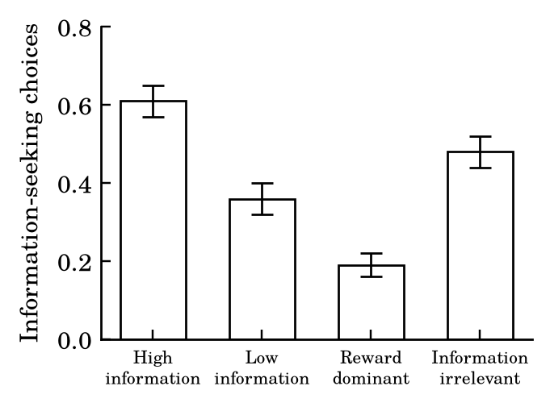
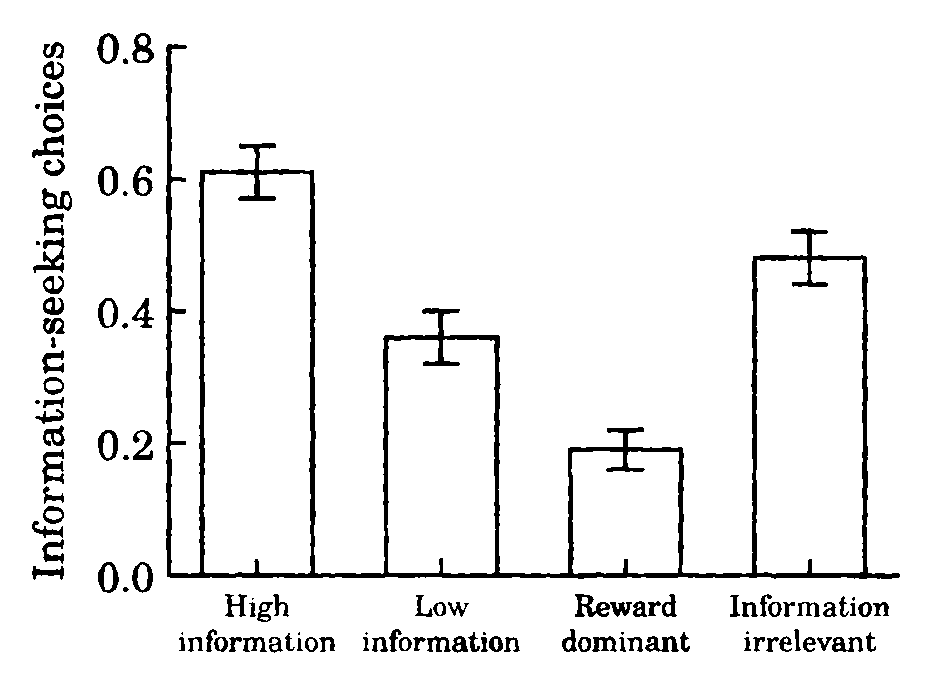

Journal of Unified Behavioral Theory
2026, Vol. 3, No. 1, 1–14
1Department of Psychology, Corbridge University
2Center for Adaptive Systems, Whitlow Institute
Learning, inference, and decision making have each been given a theory of their own, and for some decades the three theories have been on speaking terms only through the occasional shared appendix. We show that they are jointly determined by a single evolving belief state and one temporally extended objective. Our central result, the Bayes–Bellman consistency theorem, gives a necessary and sufficient condition relating Bayesian belief updating to entropy-regularized action selection in partially observable environments. Sequential probability ratio testing, diffusion decision processes, Rescorla–Wagner learning, Shepard’s law of generalization, rational analysis, and variational free energy all follow as special cases, some more willingly than others. In a preregistered experiment (N = 222), participants valued information according to its future instrumental use, and a model imposing the theorem’s constraint predicted held-out choices better than one that estimated learning and choice separately. One preregistered prediction failed; we explain why this is less damaging than it looks. We argue that several familiar distinctions in cognitive theory (learning versus decision, model-based versus model-free, exploration versus exploitation) describe levels of analysis rather than different problems, and can be retired with honors.
Keywords: adaptive behavior; Bayesian inference; value of information; sequential sampling; associative learning; cognitive architecture
Cognitive science has never lacked theories of adaptation. What it has lacked are theories of adaptation that agree with one another.
The Rescorla–Wagner model (Rescorla & Wagner, 1972) gave associative learning a quantitative account in terms of prediction error. Wald’s (1947) sequential probability ratio test gave decision making an optimal stopping rule, and the diffusion model (Ratcliff, 1978; Ratcliff & McKoon, 2008) gave it response times. Shepard (1987) gave generalization a universal law. Rational analysis (Anderson, 1990) asked what problem cognition is solving, and the free-energy principle (Friston, 2010) answered on behalf of perception, action, and a good deal else. Each tradition is remarkably successful within its own walls. The walls are the problem.
Learning models specify how an internal representation changes. Decision models specify how behavior depends on that representation. How the two relate is usually left to an architectural assumption, stated once in the introduction and not mentioned again.
Consider a participant choosing between a familiar option with a known reward rate and an unfamiliar option that pays less but reveals something about the environment. A model-based decision theory can price the information. An associative model can track how the unfamiliar option’s value changes after feedback. A sequential sampling model can describe the evidence behind the eventual keypress. Each captures part of the behavior, and none constrains the others. A learning model estimates one set of beliefs, a decision model estimates a separate set of preferences, and the two are introduced to each other in the Discussion.
We take it as a minimal requirement of a theory of adaptive behavior that the beliefs an agent holds should have something to do with what it does. The informational consequences of an action must be evaluated with the same transition structure that governs belief updating. Otherwise a model can attribute behavior to learning and decision processes that are each plausible and jointly incoherent, which describes a fair share of the literature.
Let the environment have a finite state space \(S\), actions \(A\), and observations \(O\). The organism does not see the state. It maintains a belief \(b_t(s) = P(s_t = s \mid h_t)\) given its history \(h_t\) of actions and observations, and after action \(a\) and observation \(o\) it updates by Bayes’ rule:
\[b'(s') = \frac{P(o \mid s', a) \sum_{s} P(s' \mid s, a)\, b(s)}{\sum_{\tilde s} P(o \mid \tilde s, a) \sum_{s} P(\tilde s \mid s, a)\, b(s)} \tag{1}\]
We write this update as \(b' = \tau(b, a, o)\). Actions therefore change not only what the organism receives but what it will believe.
Let \(r(b, a) = \sum_s b(s)\, r(s, a)\) be the expected immediate reward of action \(a\) under belief \(b\). The organism maximizes discounted reward plus an entropy bonus on its own choices,
\[\begin{aligned} J(\pi \mid b) = \mathbb{E}_{\pi} \Big[ \sum_{t=0}^{\infty} \gamma^{t} \big( & r(b_t, a_t) \\ & + \alpha H(\pi(\cdot \mid b_t)) \big) \Big] \end{aligned} \tag{2}\]
with \(0 \le \gamma < 1\) and \(\alpha > 0\). The entropy term provides a principled account of stochastic responding and an unprincipled excuse for most of the rest. For a value function \(V\), the value of an action is
\[\begin{aligned} Q_V(b, a) = {} & r(b, a) \\ & + \gamma \sum_{o} p(o \mid b, a)\, V\big(\tau(b, a, o)\big) \end{aligned} \tag{3}\]
and the soft Bellman operator is
\[(\mathcal{T} V)(b) = \alpha \log \sum_{a} \exp\!\left( \frac{Q_V(b, a)}{\alpha} \right) \tag{4}\]
The value of an action thus depends on its immediate reward and on the expected value of the beliefs it leaves behind.
Soren and Vale (2014) showed that any strictly positive transition kernel and strictly positive policy on finite spaces admit separable potentials, unique up to additive constants. The lemma lets state transitions and action selection sit within a common trajectory representation. Its chief virtue is also its chief defect: it allows a system to learn by one rule and choose by another, and asks nothing about whether the two have met. The present theory replaces this permissive correspondence with a common objective.
Theorem 1. For a finite partially observable decision process with bounded rewards, \(0 \le \gamma < 1\), and \(\alpha > 0\), there is a unique bounded \(V^*\) with \(V^* = \mathcal{T} V^*\). The unique optimal policy is \(\pi^*(a \mid b) \propto \exp[Q^*(b, a)/\alpha]\), and for any reference action \(a_0\),
\[\begin{aligned} \alpha \log \frac{\pi^*(a \mid b)}{\pi^*(a_0 \mid b)} = {} & r(b, a) - r(b, a_0) \\ & + \gamma\, \Delta V(b, a, a_0) \end{aligned} \tag{5}\]
where
\[\begin{aligned} \Delta V(b, a, a_0) = {} & \mathbb{E}_{o \mid b, a}\, V^*\big(\tau(b, a, o)\big) \\ & - \mathbb{E}_{o \mid b, a_0}\, V^*\big(\tau(b, a_0, o)\big). \end{aligned} \tag{6}\]
Conversely, a strictly positive policy is optimal if and only if it satisfies Equation 5.
Proof. Because log-sum-exp is nonexpansive, \(|Q_V - Q_W| \le \gamma \lVert V - W \rVert_\infty\) gives
\[\lVert \mathcal{T} V - \mathcal{T} W \rVert_\infty \le \gamma\, \lVert V - W \rVert_\infty , \tag{7}\]
so \(\mathcal{T}\) is a contraction and the Banach fixed-point theorem gives existence and uniqueness of \(V^*\). At each belief the entropy-regularized objective is strictly concave in the action distribution, so its maximizer is unique; the first-order condition gives the softmax of \(Q^*/\alpha\). Taking the ratio for two actions gives Equation 5. The odds determine a normalized positive policy, which gives the converse. ∎
The proof is short. We regard this as a strength.1
Equation 5 says that the relative preference for two actions is fixed by their difference in immediate reward and their difference in the value of what they teach. An action can be worse now and better on balance, and the theorem says exactly by how much. If an agent’s preferences do not show this, then at least one of four things is false: the assumed transition model represents its beliefs, the assumed reward represents its goals, its policy is entropy-regularized optimal, or it evaluates the future at all. The framework therefore turns “the participants were irrational” from a conclusion into a list.
Sequential sampling. With belief \(b_t = P(H_1 \mid y_{1:t})\), the log posterior odds accumulate as
\[L_t = \log \frac{P(H_1)}{P(H_0)} + \sum_{i=1}^{t} \log \frac{p(y_i \mid H_1)}{p(y_i \mid H_0)} \tag{8}\]
and the choice to accept \(H_1\), accept \(H_0\), or keep sampling yields a continuation region bounded by stopping regions. Wald’s test is recovered in the low-temperature limit under its classical cost assumptions, and the diffusion model,
\[dX_t = \mu\, dt + \sigma\, dW_t , \tag{9}\]
follows from the continuous approximation (Bogacz, Brown, Moehlis, Holmes, & Cohen, 2006). Sequential sampling is not a separate theory of response generation. It is adaptive control of a posterior that happens to have a stopwatch attached.
Associative learning. The Rescorla–Wagner update and the Kalman filter (Kalman, 1960) for a random-walk latent value \(\theta_t\) are
\[\begin{aligned} V_{t+1} &= V_t + \kappa (\lambda_t - V_t), \\ \hat\theta_{t+1} &= \hat\theta_t + K_t (\lambda_t - \hat\theta_t), \end{aligned} \tag{10}\]
and once the gain \(K_t\) reaches its steady state, setting \(K = \kappa\) makes them the same. The Rescorla–Wagner model has been a Kalman filter for some time; we are simply the first to insist on it at length. The new requirement is that the resulting estimate also constrain what the organism does next. A learning model that updates an associative strength but never says how the update changes the value of future actions is, as a theory of adaptive behavior, a theory of half of it.
Generalization. Shepard’s law, \(G(x, x') = \exp[-c\, d(x, x')]\), is a potential over stimulus space. Psychological distance governs not only how responses spread but how information gathered about one stimulus transfers to the next, so generalization and active learning are two views of one geometry.
Rational analysis and free energy. Defining the potential as negative expected utility recovers rational analysis in the deterministic limit, with the amendment that utility must include what an action reveals. Variational free energy,
\[\begin{aligned} F[q] &= \mathbb{E}_{q(z)}\big[\log q(z) - \log p(o, z)\big] \\ &= D_{\mathrm{KL}}\big(q(z) \,\Vert\, p(z \mid o)\big) - \log p(o), \end{aligned} \tag{11}\]
is one particular objective of this kind. The free-energy principle has been shown to explain a great many things. The present framework shares this property, and has the grace to say so in a limitations section.
We recruited 240 adults online. Eighteen were excluded under preregistered criteria (7 failed attention checks, 5 completed fewer than 80% of trials, 4 responded at random, and 2 reported substantial interruptions), leaving 222 (118 women, 99 men, 5 another or unreported gender; mean age 34.6 years, SD = 10.8). Participants were paid $3.50 plus a performance bonus.
On each trial participants chose between two abstract symbols. An exploitation action paid reliably but said little about the hidden state of the environment. An information-seeking action paid less but returned diagnostic feedback. Four conditions, two blocks of 30 trials each, varied whether that feedback was of any later use (Table 1). The critical contrast is between the high-information and information-irrelevant conditions, in which the feedback was identical but only in the first did it predict later rewards. A general fondness for information would not distinguish them; a theory of its instrumental value must.
| Condition | Immediate reward | Information value | Purpose |
|---|---|---|---|
| High-information | Lower | High | Instrumental information seeking |
| Low-information | Lower | Low | Control for immediate reward |
| Reward-dominant | Higher | Low | Baseline exploitation |
| Information-irrelevant | Lower | High, not useful later | Rule out novelty preference |
Models. We compared four hierarchical Bayesian models: (1) immediate reward only; (2) independent learning and choice, with separate learning-rate, reward-sensitivity, and choice parameters; (3) a Bayesian belief-state model whose action values include future reward without the full cross-temporal constraint; and (4) the Bayes–Bellman model, in which a single soft-optimal value function, Equation 4, governs both belief-driven learning and choice, with discount, inverse temperature, and reward sensitivity as participant parameters. Models were compared by participant-level cross-validation.
Participants chose the information-seeking option more often when its feedback would be useful later (.61) than when the same feedback would not (.48), a difference of .13, 95% CI [.09, .17], despite its lower immediate payoff (Figure 1). The result is inconsistent with an immediate-reward account. It is also inconsistent with simple novelty preference, which would treat the two conditions alike. That participants still chose the uninformative information nearly half the time we attribute to curiosity, which the model does not include and which we do not intend to encourage.


After informative feedback, preference for the information-seeking option changed by .084, 95% CrI [.052, .116]; after noninformative feedback it changed by .019 [−.004, .042]. Participants were sensitive to the diagnosticity of feedback, not merely its arrival.
| Model | Relative ELPD | SE |
|---|---|---|
| Immediate reward | −31.8 | 8.4 |
| Independent learning and choice | −8.6 | 4.1 |
| Bayesian belief-state | −3.2 | 2.9 |
| Bayes–Bellman consistency | 0 | — |
The Bayes–Bellman model predicted held-out choices better than the independent learning-and-choice model, ΔELPD = 8.6, SE = 4.1 (Table 2). The advantage was concentrated in the high-information condition and was small where information had no future use, which is the pattern the theory predicts and the pattern a merely flexible model would not bother to produce.2
We preregistered that participants with higher learning rates in the early blocks would adapt faster after environmental reversals. They did not, r = .08, 95% CI [−.05, .21]. We preregistered this prediction because we believed it, and we report its failure because we preregistered it. The failure was concentrated among participants who appeared to keep different learning rates for stable and changing environments, which suggests the stationary transition model needs to represent uncertainty about volatility. It does not touch the theorem, which, being a theorem, is not in a position to fail.
An organism does not first learn about its environment and then decide, in a separate office, what to do about it. The value of an action depends on what taking it will teach, and the value of information depends on the actions it will later support. These are not two processes in sequence. They are one process described twice.
Model-based and model-free learning. The distinction has had a long and productive career, much of it spent being distinguished. On the present view the two are approximations to one problem: a model-based learner computes the value of future beliefs, and a model-free learner caches a summary of it. They differ in cost and in how well they generalize, not in what they are for. We predict that apparently model-free behavior will become more sensitive to structure whenever structure becomes worth representing, and that this will be described, when it is found, as a surprising interaction.
Exploration and exploitation. Exploration has often been treated as a second motive, competing with the wish for reward. It needs no motive of its own, any more than buying a map needs its own appetite. Information has value whenever it improves later choices, and the same action can be exploratory in one context and exploitative in another. It follows that information seeking should decline when the future opportunities to use the information are removed, even if the information itself is unchanged. To our knowledge, the horizon over which information can be used has not previously been manipulated directly, and we offer the prediction to the field.
Limitations. The framework assumes the organism has an adequate generative model of its environment; real organisms may have approximate, hierarchical, or simply wrong ones. The task was simple. And the theorem establishes optimality under a stated objective, not that the brain computes it. These qualifications concern the scope of the implementation, not the mathematics, which is fine.
The question for cognitive theory is no longer whether learning and decision making should be modeled together. It is whether an account of either can survive contact with the other.
Anderson, J. R. (1990). The adaptive character of thought. Hillsdale, NJ: Erlbaum.
Bogacz, R., Brown, E., Moehlis, J., Holmes, P., & Cohen, J. D. (2006). The physics of optimal decision making: A formal analysis of models of performance in two-alternative forced-choice tasks. Psychological Review, 113, 700–765.
Friston, K. (2010). The free-energy principle: A unified brain theory? Nature Reviews Neuroscience, 11, 127–138.
Geist, M., Scherrer, B., & Pietquin, O. (2019). A theory of regularized Markov decision processes. Proceedings of the 36th International Conference on Machine Learning, 2160–2169.
Kalman, R. E. (1960). A new approach to linear filtering and prediction problems. Journal of Basic Engineering, 82, 35–45.
Ratcliff, R. (1978). A theory of memory retrieval. Psychological Review, 85, 59–108.
Ratcliff, R., & McKoon, G. (2008). The diffusion decision model: Theory and data for two-choice decision tasks. Neural Computation, 20, 873–922.
Rescorla, R. A., & Wagner, A. R. (1972). A theory of Pavlovian conditioning: Variations in the effectiveness of reinforcement and nonreinforcement. In A. H. Black & W. F. Prokasy (Eds.), Classical conditioning II: Current research and theory (pp. 64–99). New York: Appleton-Century-Crofts.
Shepard, R. N. (1987). Toward a universal law of generalization for psychological science. Science, 237, 1317–1323.
Soren, E. V., & Vale, M. T. (2014). Completion of finite stochastic systems under separable behavioral potentials. Journal of Mathematical Psychology, 61, 112–124.
Sutton, R. S., & Barto, A. G. (1998). Reinforcement learning: An introduction. Cambridge, MA: MIT Press.
Wald, A. (1947). Sequential analysis. New York: Wiley.
■
1 Readers who find the proof familiar are reminded that familiarity is not a refutation. Closely related results appear in the reinforcement-learning literature (Geist, Scherrer, & Pietquin, 2019; Sutton & Barto, 1998), where they have been used for other purposes and, in our view, undersold.
2 The Bayes–Bellman and Bayesian belief-state models did not differ reliably (ΔELPD = 3.2, SE = 2.9). As the two models share most of their structure, this is to be expected, and we do not dwell on it.